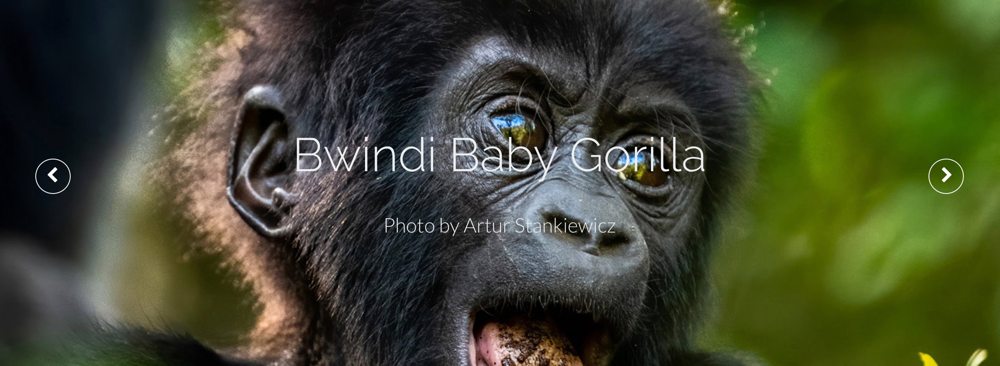

Brittany:
23andMe
Annie:
Happy Dance CBD body butter
and
Life Around 2 Angels bath bombs
Tiana:
Christkindlmarket ornaments
Mimi Li
senior editor
Go to Mimi’s pick


I've been watching Rudolph every year for as long as I can remember, and its story of inclusivity and friendship always warms my heart. I introduced it to my two nieces, and they love it as much as I do. Being able to watch it with them this year after a holiday lost to the pandemic is one of many things I'm excited for in December.
Jennifer Bulat
managing editor
Go to Jennifer’s pick
Luke Collins
SVP
thought leadership and content strategy
Go to Luke’s pick

If you're looking to shore up a sense of connection, one way to do it is to help gorillas—who look like babies and grannies—live large on $5 a month.
Or that was what the Uganda Wildlife Authority told me when I was giving $5 a month in college. (I think I still do? Time to give more than $5 a month.) The organization's updates—on social media and via email—are along the lines of “Mimi the gorilla has recovered from an infection after receiving antibiotics and has rejoined the troupe. Her friends Edith and Mervin were the first to welcome her.”
Alia:
Blue Bottle coffee subscription

Whether you’re looking for something family friendly or a way to spend countless hours (or days!) with distractions of questionable entertainment value, we have suggestions for what to watch this holiday season. And be sure to scroll to the bottom for some of the things we’re looking forward to giving—and maybe also receiving.

Gifts we’re excited to give (and get) this holiday season
In the category of “if you have insomnia this holiday season and need something to put you to sleep,” I recommend the pinnacle of Test cricket: The Ashes. Here's the back story. Cricket remains largely unknown in the United States, despite being one of the world's most popular sports—and one of the most bet on. And while the game has evolved with all sorts of alternative formats, Test cricket remains its showcase: matches that stretch for as long as five days, filled with strategic intrigue, momentum ebbs and flows, and the possibility no one wins at the end of it all (which truly baffles all Americans).
Within the rarified air of Test cricket, The Ashes is the once-every-two-years equivalent of the Super Bowl on steroids. It's a series of five matches between Australia and England, fighting over a four-inch-tall terra-cotta urn containing the burnt remains of a bail (look it up!) immolated in 1882 when Australia defeated England for the first time on English soil—and losing to the upstart Aussies apparently meant the death of English cricket.
Anyway, come for the history, stay for the spectacle. This series is in Australia. The players must wear all white. The cricket ball must be red leather. And the overall series record is Australia 33, England 32, and six draws. For a taste, catch the first day's play of the Boxing Day Test on December 26 at the Melbourne Cricket Ground (known as “the ‘G’”). More than 100,000 spectators will cram into the country's most famous stadium with everything to play for—provided you can stay awake.

Ugne Jurgaityte
design associate
Go to Ugne’s pick

For something not so much Christmassy as in the winter spirit, I highly recommend an episode or two of Pingu, a Swiss-British stop-motion clay-animated comedy series about emperor penguins and their daily lives in the South Pole. If you haven’t seen any Pingu, this clip will tell you everything you need to know about how relatable these penguins’ lives are. If your holidays include multilingual families, like mine, this is a solid choice for viewing because it has no dialogue and plenty of universal experiences. And the styling is so nostalgic that even if you didn’t grow up watching it, you'll feel transported by the familiar color tones, which resemble those of all the Rankin/Bass classics.